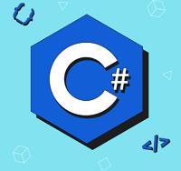
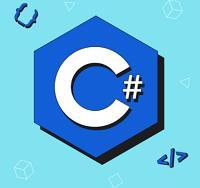
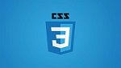
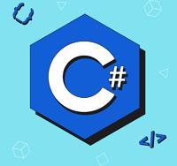
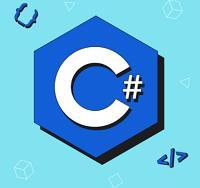

As a newly graduated junior developer from The Tech Academy, I am enthusiastic about embarking on my career in the world of software development.
Equipped with a solid foundation in programming concepts and practical skills gained through my education,
I am eager to apply my knowledge to real-world projects and contribute to the ever-evolving field of technology.
During my time at The Tech Academy, I gained proficiency in a variety of web and programming languages, including HTML, CSS, JavaScript, SQL, C# and more.
I am excited to apply these skills in developing innovative software solutions and creating user-friendly applications.
Being a junior developer, I approach each project with a willingness to learn and adapt.
I am eager to collaborate with experienced team members and learn from their expertise to enhance my skills further.
I am also committed to staying up-to-date with the latest advancements in the field of software development through continuous learning and professional development.
I am a detail-oriented and results-driven individual who thrives in a fast-paced environment. I am keen on applying my problem-solving skills
to tackle complex challenges and deliver high-quality code. I am also a strong believer in effective communication and teamwork,
and I am excited to contribute to a collaborative and inclusive work environment.
In my free time, I enjoy experimenting with personal coding projects, exploring new technologies, and staying up-to-date with the latest industry trends.
I am passionate about leveraging technology to create meaningful solutions that have a positive impact on people's lives.
I am a full-stack developer and would love to work with you on your project !


